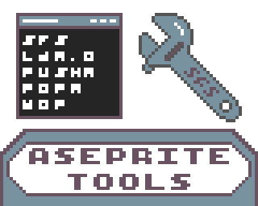
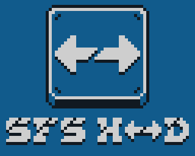
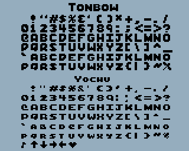

Aseprite Tools
Aseprite • Downloadable Scripts • For use with any system

We have crafted an entire suite of graphics conversions tools using Aseprite scripts to make the 8-bit graphics development
pipeline as smooth as possible. With these scripts, you can edit your art and export it as graphics data targetting multiple
different 8-bit systems!
See more →
SFS-HD Multi-Base Calculator
Calculator • Numeric Base Conversion • PC/Mac/Linux

This is a tool for those working with 8 and 16-bit systems. SFS-HD allows for quick
numeric base conversion at a glance, always displaying results in decimal, hexadecimal and binary, as well as
all the basic calculations you could want when working with 8-bit hardware.
If you're a retro developer, the SFS-HD is a must!
Download →
Tonbow Font Series
Font • Downloadable • For use with any system

We feel that the Tonbow font series captures the fun, light-hearted vibe that we want our games to give off, while still remaining stylish and legible.
Feel free to download the font pack and use it to your heart's content, just make sure to credit us somewhere in your project!
Download →